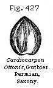
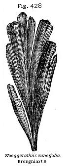

The Student’s Elements of Geology
Line of Separation between Mesozoic and Palæozoic Rocks. — Distinctness of Triassic and Permian Fossils. — Term Permian. — Thickness of calcareous and sedimentary Rocks in North of England. — Upper, Middle, and Lower Permian. — Marine Shells and Corals of the English Magnesian Limestone. — Reptiles and Fish of Permian Marl-slate. — Foot-prints of Reptiles. — Angular Breccias in Lower Permian. — Permian Rocks of the Continent. — Zechstein and Rothliegendes of Thuringia. — Permian Flora. — Its generic Affinity to the Carboniferous.
In pursuing our examination of the strata in descending order, we have next to pass from the base of the Secondary or Mesozoic to the uppermost or newest of the Primary or Palæozoic formations. As this point has been selected as a line of demarkation for one of the three great divisions of the fossiliferous series, the student might naturally expect that by aid of lithological and palæontological characters he would be able to recognise without difficulty a distinct break between the newer and older group. But so far is this from being the case in Great Britain, that nowhere have geologists found more difficulty in drawing the line of separation than between the Secondary and Primary series. The obscurity has arisen from the great resemblance in colour and mineral character of the Triassic and Permian red marls and sandstones, and the scarcity and often total absence in them of organic remains. The thickness of the strata belonging to each group amounts in some places to several thousand feet; and by dint of a careful examination of their geological position, and of those fossil, animal, and vegetable forms which are occasionally met with in some members of each series, it has at length been made clear that the older or Permian rocks are more connected with the Primary or Palæozoic than with the Secondary or Mesozoic strata already described.
The term Permian has been proposed for this group by
Sir R. Murchison, from Perm, a Russian province, where it occupies an area twice the size of France, and contains a great abundance and variety of fossils, both vertebrate and invertebrate. Professor Sedgwick in 1832* described what is now recognised as the central member of this group, the Magnesian limestone, showing that it attained a thickness of 600 feet along the north-east of England, in the counties of Durham, Yorkshire, and Nottinghamshire, its lower part often passing into a fossiliferous marl-slate and resting on an inferior Red Sandstone, the equivalent of the Rothliegendes of Germany. It has since been shown that some of the Red Sandstones of newer date also belong to the Permian group; and it appears from the observations of Mr. Binney, Sir R. Murchison, Mr. Harkness, and others, that it is in the region where the limestone is most largely developed, as, for example, in the county of Durham, that the associated red sandstones or sedimentary rocks are thinnest, whereas in the country where the latter are thickest the calcareous member is reduced to thirty, or even sometimes to ten feet. It is clear, therefore, says Mr. Hull, that the sedimentary region in the north of England area has been to the westward, and the calcareous area to the eastward; and that in this group there has been a development from opposite directions of the two types of strata.
In illustration of this he has given us the following table:
| N.W. of England | N.E. of England | |
| Feet | Feet | |
| Upper Permian (Sedimentary) | 600 | 50–100 |
| Middle Permian (Calcareous) | 10–30 | 600 |
| Lower Permian (Sedimentary) | 3000 | 100–250† |
Upper Permian.—What is called in this table the Upper Permian will be seen to attain its chief thickness in the north-west, or on the coast of Cumberland, as at St. Bee’s Head, where it is described by Sir Roderick Murchison as consisting of massive red sandstones with gypsum resting on a thin course of Magnesian Limestone with fossils, which again is connected with the Lower Red Sandstone, resembling the upper one in such a manner that the whole forms a continuous series. No fossil footprints have been found in this Upper as in the Lower Red Sandstone.
* Trans. Geol. Soc. Lond., Second Series, vol.
iii, p. 37.
† Edward Hull, Ternary Classification, Quart. Journ.
Science, No. xxiii, 1869.
Middle Permian—Magnesian Limestone and Marl-slate.—This formation is seen upon the coast of Durham and Yorkshire, between the Wear and the Tees. Among its characteristic fossils are Schizodus Schlotheimi (Fig. 410) and Mytilus septifer (Fig. 412). These shells occur at Hartlepool and Sunderland, where the rock assumes an oolitic and botryoidal character. Some of the beds in this division are ripple-marked. In some parts of the coast of Durham, where the rock is not crystalline, it contains as much as 44 per cent of carbonate of magnesia, mixed with carbonate of lime. In other places—for it is extremely variable in structure—it consists chiefly of carbonate of lime, and has concreted into globular and hemispherical masses, varying from the size of a marble to that of a cannon-ball, and radiating from the centre. Occasionally earthy and pulverulent beds pass into compact limestone or hard granular dolomite. Sometimes the limestone appears in a brecciated form, the fragments which are united together not consisting of foreign rocks but seemingly composed of the breaking-up of the Permian limestone itself, about the time of its consolidation. Some of the angular masses in Tynemouth cliff are two feet in diameter.
The magnesian limestone sometimes becomes very fossiliferous and includes in it delicate bryozoa, one of which, Fenestella retiformis (Fig. 413), is a very variable species, and has received many different names. It sometimes attains a large size, single specimens measuring eight inches in width. The same bryozoan, with several other British species, is also found abundantly in the Permian of Germany.
The total known fauna of the Permian series of Great Britain at present numbers 147 species, of which 77, or more than half, are mollusca. Not one of these is common to rocks newer than the Palæozoic, and the brachiopods are the only group which have furnished species common to the more ancient or Carboniferous rocks. Of these Lingula Crednerii
(Fig. 415) is an example. There are 25 Gasteropods and only one cephalopod, Nautilus Freieslebeni, which is also found in the German Zechstein.
Shells of the genera Productus (Fig. 414) and Strophalosia (the latter of allied form with hinge teeth), which do not occur in strata newer than the Permian, are abundant in the ordinary yellow magnesian limestone, as will be seen in the valuable memoirs of Messrs. King and Howse. They are accompanied by certain species of Spirifera (Fig. 416), Lingula Crednerii (Fig. 415), and other brachiopoda of the true primary or palæozoic type. Some of this same tribe of shells, such as Camarophoria, allied to Rhynchonella, Spiriferina, and two species of Lingula, are specifically the same as fossils of the carboniferous rocks. Avicula, Arca, and Schizodus (Fig. 410), and other lamellibranchiate bivalves, are abundant, but spiral univalves are very rare.
Beneath the limestone lies a formation termed the marl-stone, which consists of hard calcareous shales, marl-slate, and thin-bedded limestones. At East Thickley, in Durham, where
* King's Monograph, pl. 2.
it is thirty feet thick, this slate has yielded many fine specimens of fossil fish—of the genera Palæoniscus ten species, Pygopterus two species, Coelacanthus two species, and Platysomus two species, which as genera are common to the older Carboniferous formation, but the Permian species are peculiar, and, for the most part, identical with those found in the marl-slate or copper-slate of Thuringia.
The Palæoniscus above mentioned belongs to that division of fishes which M. Agassiz has called “Heterocercal,” which have their tails unequally bilobate, like the recent shark and sturgeon, and the vertebral column running along the upper caudal lobe. (See Fig. 418.) The “Homocercal” fish, which comprise almost all the 9000 species at present known in the living creation, have the tail-fin either single or equally divided; and the vertebral column stops short, and is not prolonged into either lobe. (See Fig. 419.) Now it is a singular fact, first pointed out by Agassiz, that the heterocercal form, which is confined to a small number of genera in the existing creation, is universal in the magnesian limestone, and all the more ancient formations. It characterises the earlier periods of the earth’s history, whereas in the secondary strata, or those newer than the Permian, the homocercal tail predominates.
A full description has been given by Sir Philip Egerton of the species of fish characteristic of the marl-slate, in Professor King’s monograph before referred to, where figures of the
ichthyolites, which are very entire and well preserved, will be found. Even a single scale is usually so characteristically marked as to indicate the genus, and sometimes even the particular species. They are often scattered through the beds singly, and may be useful to a geologist in determining the age of the rock.
We are indebted to Messrs. Hancock and Howse for the discovery in this marl-slate at Midderidge, Durham, of two species of Protosaurus, a genus of reptiles, one representative of which, P. Speneri, has been celebrated ever since the year 1810 as characteristic of the Kupfer-schiefer or Permian of Thuringia. Professor Huxley informs us that the agreement of the Durham fossil with Hermann von Meyer’s figure of the German specimen is most striking. Although the head is wanting in all the examples yet found, they clearly belong to the Lacertian order, and are therefore of a higher grade than any other vertebrate animal hitherto found fossil in a Palæozoic rock. Remains of Labyrinthodont reptiles have also been met with in the same slate near Durham.
Lower Permian.—The inferior sandstones which lie beneath the marl-slate consist of sandstone and sand, separating the Magnesian Limestone from the coal, in Yorkshire and Durham. In some instances, red marl and gypsum have been found associated with these beds. They have been classed
with the Magnesian Limestone by Professor Sedgwick, as being nearly co-extensive with it in geographical range, though their relations are very obscure. But the principal development of Lower Permian is, as we have seen by Mr. Hull’s table p. 386, in the northwest, where the Penrith sandstone, as it has been called, and the associated breccias and purple shales are estimated by Professor Harkness to attain a thickness of 3000 feet. Organic remains are generally wanting, but the leaves and wood of coniferous plants, and in one case a cone, have been found. Also in the purple marls of Corncockle Muir near Dumfries, very distinct footprints of reptiles occur, originally referred to the Trias, but shown by Mr. Binney in 1856 to be Permian. No bones of the animals which they represent have yet been discovered.
Angular Breccias in Lower Permian.—A striking feature in these beds is the occasional occurrence, especially at the base of the formation, of angular and sometimes rounded fragments of Carboniferous and older rocks of the adjoining districts being included in a paste of red marl. Some of the angular masses are of huge size.
In the central and southern counties, where the Middle Permian or Magnesian Limestone is wanting, it is difficult to separate the upper and lower sandstones, and Mr. Hull is of opinion that the patches of this formation found here and there in Worcestershire, Shropshire, and other counties may have been deposited in a sea separated from the northern basin by a barrier of Carboniferous rocks running east and west, and now concealed under the Triassic strata of Cheshire. Similar breccias to those before described are found in the more southern counties last mentioned, where their appearance is rendered more striking by the marked contrast they present to the beds of well-rolled and rounded pebbles of the Trias occupying a large area in the same region.
Professor Ramsay refers the angular form and large size of the fragments composing these breccias to the action of floating ice in the sea. These masses of angular rock, some of them weighing more than half a ton, and lying confusedly in a red, unstratified marl, like stones in boulder-drift, are in some cases polished, striated, and furrowed like erratic blocks in the moraine of a glacier. They can be shown in some cases to have travelled from the parent rocks, thirty or more miles distant, and yet not to have lost their angular shape.*
Permian Rocks of the Continent.—Germany is the classic ground of the Magnesian Limestone now called Permian.
* Ramsay, Quart. Geol. Journ., 1855; and Lyell, Principles of Geology, vol. i, p. 223, 10th edit.
The formation was well studied by the miners of that country a century ago as containing a thin band of dark-coloured cupriferous shale, characterised at Mansfield in Thuringia by numerous fossil fish. Beneath some variegated sandstones (not belonging to the Trias, though often confounded with it) they came down first upon a dolomitic limestone corresponding to the upper part of our Middle Permian, and then upon a marl-slate richly impregnated with copper pyrites, and containing fish and reptiles (Protosaurus) identical in species with those of the corresponding marl-slate of Durham. To the limestone they gave the name of Zechstein, and to the marl-slate that of Mergel-schiefer or Kupfer-schiefer. Beneath the fossiliferous group lies the Rothliegendes or Rothtodt-liegendes, meaning the red-lyer or red-dead-lyer, so-called by the German miners from its colour, and because the copper had died out when they reached this underlying non-metalliferous member of the series. This red under-lyer is, in fact, a great deposit of red sandstone, breccia, and conglomerate with associated porphyry, basalt, and amygdaloid.
According to Sir R. Murchison, the Permian rocks are composed, in Russia, of white limestone, with gypsum and white salt; and of red and green grits, occasionally with copper ore; also magnesian limestones, marl-stones, and conglomerates.
Permian Flora.—About 18 or 20 species of plants are known in the Permian rocks of England. None of them pass down into the Carboniferous series, but several genera, such as Alethopteris, Neuropteris, Walchia, and Ullmania, are common to the two groups. The Permian flora on the Continent appears, from the researches of MM. Murchison and de Verneuil
in Russia, and of MM. Geinitz and von Gutbier in Saxony, to be, with a few exceptions, distinct from that of the coal.
In the Permian rocks of Saxony no less than 60 species of fossil plants have been met with. Two or three of these, as Calamites gigas, Sphenopteris erosa, and S. lobata, are also met with in the government of Perm in Russia. Seven others, and among them Neuropteris Loshii, Pecopteris arborescens, and P. similis, and several species of Walchia (see Fig. 426), a genus of Conifers, called Lycopodites by some authors, are said by Geinitz to be common to the coal-measures.
Among the genera also enumerated by Colonel Gutbier are the fruit called Cardiocarpon (see Fig. 427), Asterophyllites, and Annularia, so characteristic of the Carboniferous period; also Lepidodendron, which is common to the Permian of Saxony, Thuringia, and Russia, although not abundant. Neoggerathia (see Fig. 428), the leaves of which have parallel veins without a midrib, and to which various generic synonyms, such as Cordaites, Flabellaria, and Poacites, have been given, is another link between the Permian and Carboniferous vegetation. Coniferæ, of the Araucarian division, also occur; but these are likewise met with both in older and newer rocks. The plants called Sigillaria and Stigmaria, so marked a feature in the Carboniferous period, are as yet wanting in the true Permian.
Among the remarkable fossils of the Rothliegendes, or lowest part of the Permian in Saxony and Bohemia, are the silicified trunks of tree-ferns called generically Psaronius. Their bark was surrounded by a dense mass of air-roots, which often constituted a great addition to the original stem, so as to double or quadruple its diameter. The same remark holds good in regard to certain living extra-tropical arborescent ferns, particularly those of New Zealand.
Upon the whole, it is evident that the Permian plants approach much nearer to the Carboniferous flora than to the Triassic; and the same may be said of the Permian fauna.
* Murchison's Russia, vol. ii, pl. A, fig. 3.